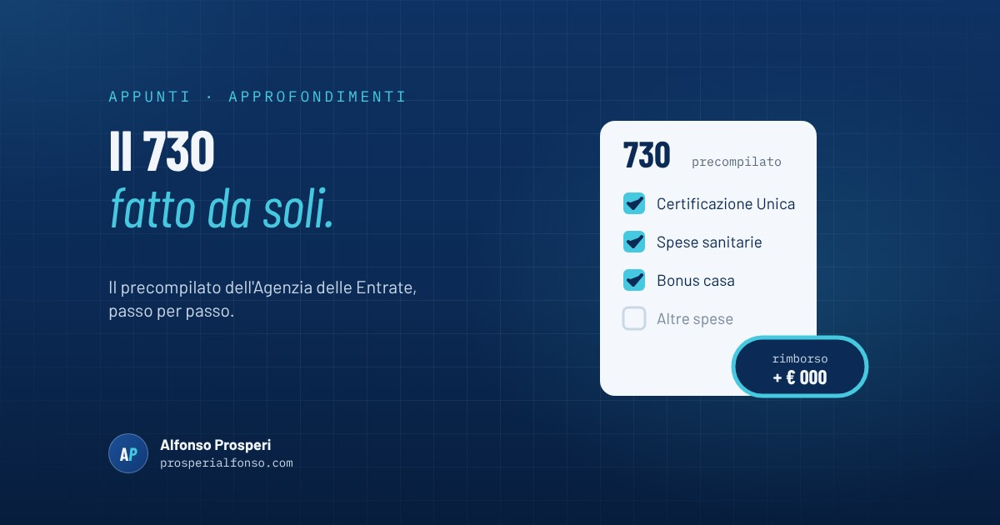

Per chi ha un lavoro dipendente o una pensione, la dichiarazione dei redditi si può fare da soli con il 730 precompilato dell'Agenzia delle Entrate. Molti dati sono già inseriti: a te tocca controllarli, aggiungere quello che manca e inviare. Nessun costo e, se tutto torna, il rimborso arriva in busta paga o sulla pensione.
Le date da ricordare
Il calendario cambia leggermente ogni anno, ma lo schema è sempre simile. Nel 2026, per esempio:
- dal 30 aprile il 730 precompilato era consultabile;
- dal 14 maggio si poteva modificare, accettare e inviare;
- il termine per l'invio era il 30 settembre.
Più presto invii, prima arriva l'eventuale rimborso: di solito con lo stipendio o la pensione dei mesi estivi.
Cosa serve
- Un'identità digitale: SPID, CIE o CNS.
- La Certificazione Unica (CU) del datore di lavoro o dell'ente pensionistico, per confronto.
- Le ricevute delle spese che vuoi detrarre e che potrebbero mancare.
Passo per passo
- Vai sul sito della dichiarazione precompilata e accedi.
- Apri il 730 dell'anno: puoi scegliere la modalità semplificata, con domande guidate e un linguaggio più chiaro, oppure quella ordinaria con i quadri del modello.
- Controlla i redditi: devono esserci tutte le CU dei datori di lavoro dell'anno precedente.
- Controlla spese e detrazioni: spese sanitarie, interessi del mutuo, assicurazioni, spese universitarie, rate dei bonus casa degli anni passati. Molte arrivano in automatico, altre vanno aggiunte a mano.
- Indica il sostituto d'imposta (di solito il datore di lavoro o l'ente pensionistico) che farà il conguaglio.
- Guarda il risultato: rimborso o somma da versare. Se va bene, invia e conserva la ricevuta.
Accettare senza modifiche conviene?
Se accetti il 730 così com'è, senza cambiare dati che incidono sul calcolo, l'Agenzia non fa i controlli documentali sulle spese che ha inserito lei. Ma se manca qualcosa, accettarlo così vuol dire perdere una detrazione. Il consiglio è sempre lo stesso: controlla tutto e modifica se serve. Le ricevute delle spese aggiunte o cambiate vanno conservate.
Per i familiari
Puoi presentare il 730 anche per un familiare, per esempio un genitore anziano, con una delega da attivare online o allo sportello. E se in coppia avete entrambi un reddito da lavoro o pensione, si può valutare il 730 congiunto, con un unico conguaglio.
Quando è meglio farsi aiutare
Se hai redditi particolari (affitti, eredità, redditi all'estero) o non ti senti sicuro, un CAF o un professionista resta la scelta più tranquilla. Per tutti gli altri, il precompilato è uno strumento comodo e affidabile, se lo si controlla con attenzione.